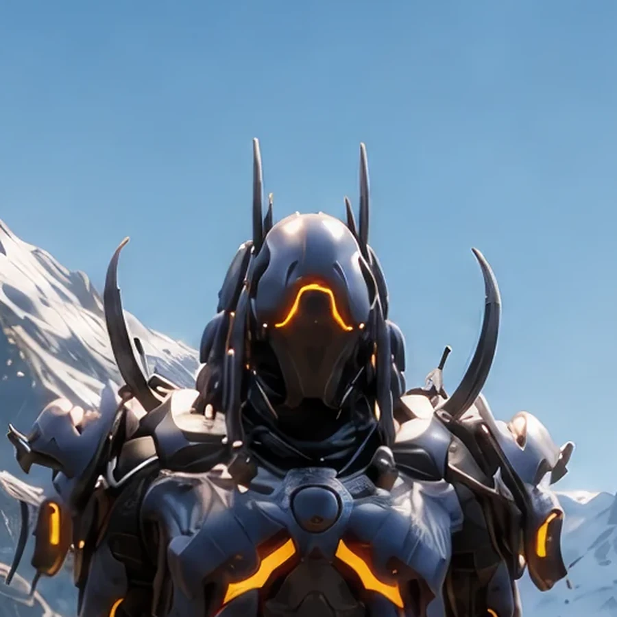

Field Observation
Glavue concealed a red alien crystalline node in the rocks at the far right on Earth 1. The hidden node extends hostile alien monitoring into the alpine valley.
 ©
©
GENEZYS ARCHIVE · Synthbot
Guidance Array
Identity & combat record
Archive node 01 / 04

Archive record
Glavue never misses, because Glavue never fires until the calculation is complete. The Pin Lock delivers one high-voltage shot that pierces any defense. The Syndicate values precision above all, and Glavue is its most precise instrument.
Combat signature
Surges high-voltage salvo: Deals 130 pierce damage to 1 enemy.
Genezys 04:03 ™&©2026LEGIONS
Field intelligence
Archive node 02 / 04
FIELD REPORT // HOSTILE CRYSTAL NODE

Mission successfulAdditional intelligence available
Field Observation
Glavue concealed a red alien crystalline node in the rocks at the far right on Earth 1. The hidden node extends hostile alien monitoring into the alpine valley.
Environment
Object Analysis
Key Findings
Restricted visual records
Archive node 03 / 04

Motion archive
Archive node 04 / 04
Motion record not yet recovered